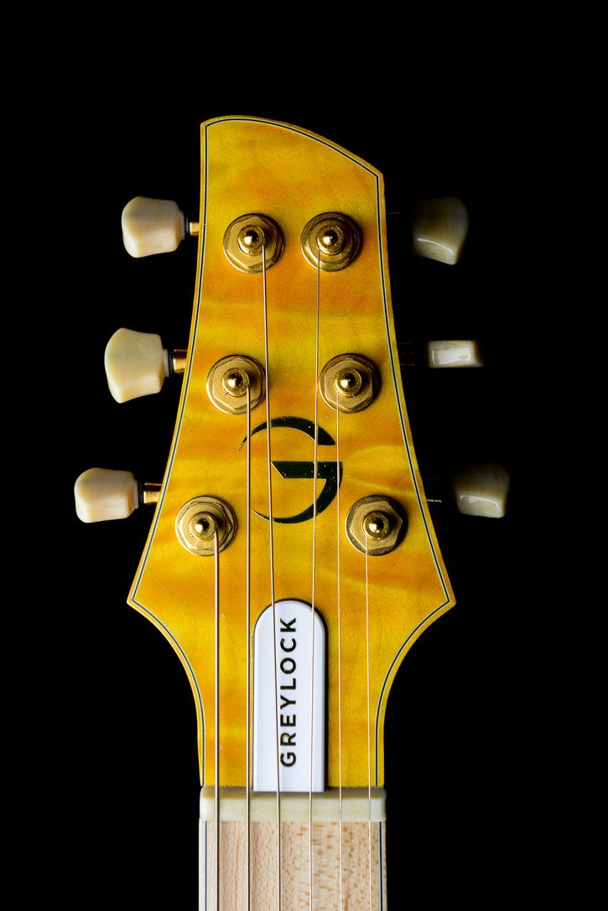

About Greylock Guitars
A guitar honed to disappear in your hands is all about the freedom and confidence to rely on your instrument utterly. A neck that plays as easily at the twelfth fret as it does at the first. Tones that meet the need of the song. Frets that stay smooth and true, night after night, year after year. A tremolo that holds its pitch. It means the guitar has already earned your trust, so your focus is entirely on the music.



The Whole, Not the Parts
That standard is more than a clever feature or signature ingredient; it’s thousands of deliberate decisions working in concert toward a rational, organic whole: the weight and balance, the neck shape and fret feel and how naturally the body sits against you, the grain and figure of the wood and the way the finish catches light, the headstock shape and tuner locations, the fret wire, the specific voicing of a pickup and how easily a player can move between sounds intuitively. None of these details carries the story alone. Together, they stop functioning as separate things and start functioning as one thing — an instrument that feels like home the moment you pick it up, and looks like it belongs there too, so you’re free to just play.
We operate at the intersection of modern precision and old-world soul. Our necks are carved with CNC technology to ensure accuracy, then hand-tuned and finished to feel like they’ve been played for fifty years.
The Long Way
Paul Caluori arrived at that standard the long way. He grew up with a violin in his hands — not the usual origin for a guitar maker. But the physicality of a stringed instrument — how it feels, how it responds to the smallest shift in pressure or angle — was never an abstraction to him. And it informed everything that came after: wood, design, electronics, hardware, engineering. A few years after repairing the bridge on his first electric guitar (a Sears SG-style!) he built his first from scratch, in a garage, the way many of these stories start. What followed wasn’t a straight line to a company. For three decades, alongside a career in media, it was building, repairing, restoring, and — more than anything — putting instruments in the hands of the best players he could find and paying close attention to their responses and needs. Greylock Guitars grew out of that work, and it is now Paul’s full-time focus. Somewhere in those decades, a conviction took hold: the guitars that matter most to a player aren’t necessarily the ones that impress at a distance. They’re the ones that stop being noticeable at all.
The guitars that matter most to a player aren’t simply the ones that impress at a distance. They’re the ones that stop being noticeable at all.
The Name
The name works the same way the guitars do — not one fact carrying the story, but several that work together. Mount Greylock is the highest point in Massachusetts, in the Berkshires where Paul grew up and went to school — and Saddleback, the original solid-body model, was the mountain’s name before Greylock became the official one. Bascom, the largest model in the line, is named for Bascom Lodge at the summit and for John Bascom, the professor from Williams College — Paul’s own alma mater — who spent much of his life advocating for the mountain’s preservation as public land. It’s a personal thread Paul is picking back up, the same way every guitar in the line picks up a piece of what he learns playing violin, guitar, mandolin and banjo.
Built to Order
None of this is meant to be admired from a distance. It’s meant to be played. Which is why Greylock doesn’t just build instruments to a fixed spec and hope they fit — every model exists as a starting point for a conversation about what a specific player actually needs. If you want a Saddleback with spalted maple instead of curly, a Goshawk voiced differently for how you actually dig in, or a Bascom built around the way your hands move between chords and lead, that conversation is exactly the one Greylock wants to have. A guitar built to disappear in your hands has to start with your hands — which is why every model can be built to order, tuned to the player it’s meant for.
A guitar honed to disappear in your hands.